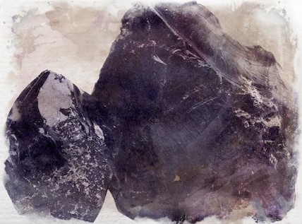

Erzurum
Formed by compressed sediment, it is an ancient compressed wood. This black mineral is easy to carve but also easy to break when seeking finer detail and thus takes an experienced hand. It is used by artisans for ornamental purposes. It isn’t mined but beachcombed and is rare.